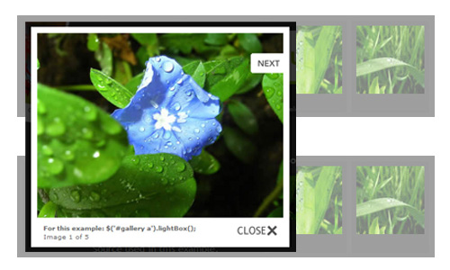
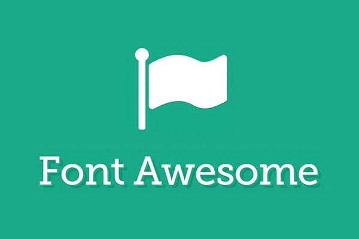

Libraries and tools which I use is:
 Jquery.js
Jquery.js- Fancybox.js
 Bootstrap.js
Bootstrap.js- Font Awesome
 Chart.js
Chart.js Angular 1.5.1
Angular 1.5.1
- DND-lists
- Angular-resource
- Angular-route
- Angular-desktop-notification
- Angular-chart
- Angular-sanitize
Libraries
- Gulp
 Git
Git Sass preprocessor
Sass preprocessor
Tools